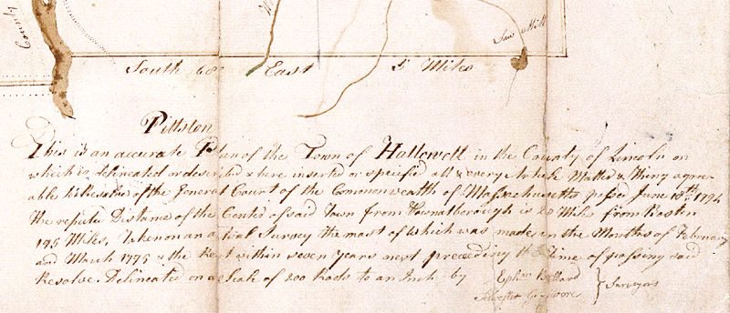

|
Detail: Map Legend The Legend below reads: This is an accurate Plan of
the Town of Hallowell in the County of Lincoln on which is delineated
or described & here inserted or specified all & every Article
Matter & Thing agreeable to a Resolve of the General Court of the
Commonwealth of Massachusetts passed June 10th 1794. |
|||
| Ephm Ballard | } | Surveyors | |
| Silvester G. Moore | |||
 |
|
||||||||||||||||||